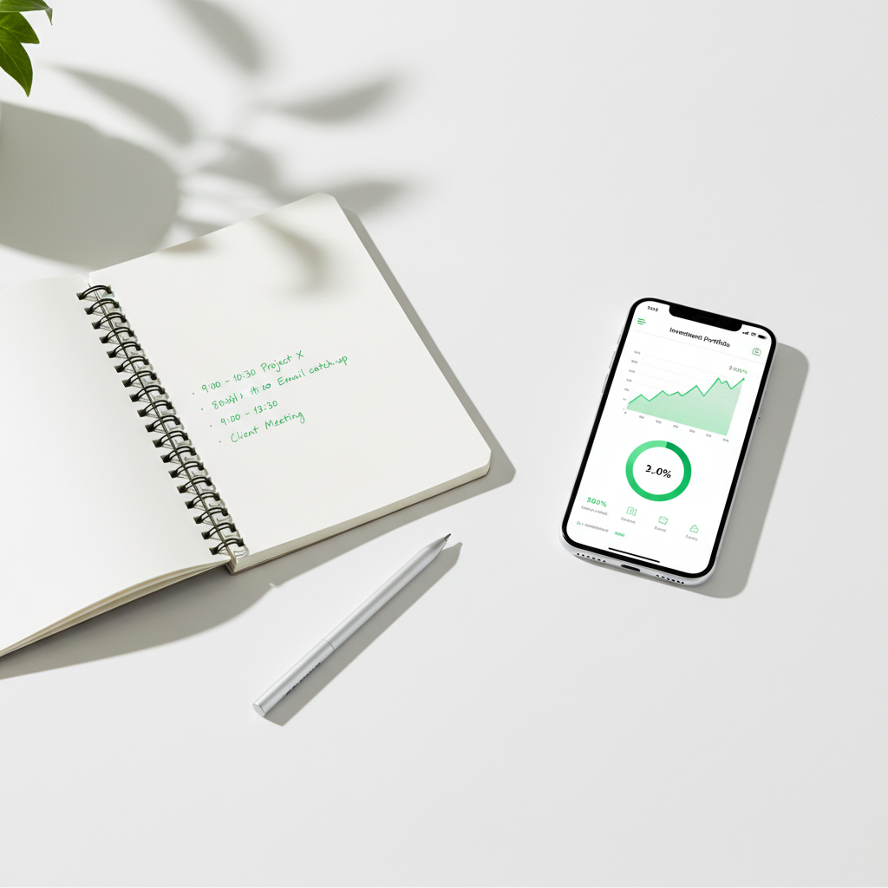

How to Track the Time I Spend Investing

- Most investors dramatically underestimate how much time they spend on investing because they don't count the "invisible" hours like checking prices and reading news.
- A simple timer app or spreadsheet is all you need to start tracking. The tool matters less than the habit.
- Categorize your time into research, trading, monitoring, and learning so you can see where your hours actually go.
- After tracking for one month, you'll have enough data to calculate your real hourly rate and make informed decisions about your investing approach.
When I first tried to figure out how much time I was spending on investing, I guessed about 3 hours a week. After actually tracking it for a month, the real number was closer to 9. I was checking stock prices on my phone while making coffee, reading market analysis during lunch, and watching investing YouTube videos before bed. None of that felt like "investing time" in the moment, but it absolutely was.
If you want to know whether your active investing is actually worth it, the first step is knowing how many hours you're putting in. You cant calculate your real hourly rate from investing without an accurate time count. Here's exactly how I track mine.
Why Should I Bother Tracking My Investing Time?
The short answer is that you can't improve what you don't measure. But the longer answer is more interesting.
Tracking your investing time forces you to confront the true cost of active investing. According to a Vanguard research paper on advisor's alpha, the behavioral coaching component of financial advice is worth about 1.5% in annual returns. A big part of that value comes from preventing investors from spending too much time monitoring markets and making emotional decisions. When you track your time, you become your own behavioral coach.
There's also a practical benefit: once you know where your investing hours go, you can cut the low-value activities and keep the ones that actually move the needle. Most people discover that 80% of their investing time produces roughly 0% of their returns.
What Activities Should I Count as "Investing Time"?
This is where most people go wrong. They only count the obvious stuff like placing trades or reading annual reports. But investing time includes a lot more then that. Here's what I track:
- Research: Reading earnings reports, analyzing financial statements, watching company presentations, reading analyst notes
- Trading: Placing orders, managing positions, reviewing trade confirmations, adjusting stop losses
- Monitoring: Checking portfolio value, watching price movements, reading market news, scrolling financial social media
- Learning: Reading investing books, watching educational content, taking courses, listening to investing podcasts
- Admin: Tax preparation for investments, rebalancing, transferring funds, updating spreadsheets
That monitoring category is the sneaky one. Every time you open your brokerage app to "just check" how things are going, that's investing time. Those 2-minute phone checks add up to hours per week for most people.
What About Casual Conversations About the Market?
I don't count casual conversations with friends about stocks unless I'm actively seeking investment advice or ideas. But if you're in a Discord server or subreddit specifically discussing trades and investment strategies, that counts. Use your judgment, but err on the side of including more rather than less. The whole point is to get an honest number.
What Tools Can I Use to Track Investing Time?
You don't need anything fancy. I've tried several approaches over the years and here's what actually works:
Option 1: A Simple Timer App
Toggl Track is what I used for the first six months. It's free, works on your phone and desktop, and lets you categorize time entries. Every time I did anything investing-related, I'd start the timer and tag it with a category. The key habit is starting the timer before you open your brokerage app or financial news site.
Option 2: The Spreadsheet Method
If you prefer something simpler, a basic spreadsheet works fine. I have a Google Sheet with four columns: date, activity, category, and minutes. At the end of each day, I spend 60 seconds logging what I did. It's not as precise as a timer, but it's close enough and easier to maintain.
Option 3: The Weekly Estimate Method
If you're not ready to track daily, start with a weekly estimate. Every Sunday, think back through the week and estimate how much time you spent on each investing category. This is the least accurate method, but it's infinitely better then not tracking at all. After a month of weekly estimates, you can plug your total hours into the Investment Time Tracker to see your hourly rate.
Option 3: Screen Time Data
Here's a trick most people overlook. Both iOS and Android track your screen time by app. Check how much time you spent in your brokerage app, financial news apps, and investing-related websites. This won't capture everything (like reading a physical book about investing) but it gives you a solid baseline for the digital monitoring time that most people undercount.
How Do I Build the Tracking Habit?
The hardest part isn't choosing a tool. Its actually remembering to track consistently. Here's what worked for me:
- Set a phone reminder for the end of each day to log your investing time
- Put a sticky note on your monitor that says "start timer" until the habit sticks
- Track for one month minimum before drawing any conclusions. A single week isn't enough data
- Don't judge yourself during the tracking period. The goal is honest data, not behavior change (that comes later)
After about two weeks, tracking becomes automatic. It takes less than a minute per day and the insights are genuinely valuable.
What Should I Do With the Data?
Once you've tracked for a month, you'll have a clear picture of where your investing time goes. Here's how to use it:
First, calculate your total monthly hours and multiply by 12 to get an annual estimate. Then use that number to figure out your hourly rate from investing. Compare that to what you earn at your day job. If your investing hourly rate is significantly lower, it might be time to rethink how much time you're spending.
Second, look at the category breakdown. In my experience, most people find that monitoring (checking prices and reading news) takes up 40 to 60% of their total investing time. This is almost always the lowest-value category and the easiest to cut. A Morningstar Mind the Gap study found that investors who check their portfolios less frequently tend to earn higher returns because they make fewer emotional trades.
Third, set a time budget going forward. Decide how many hours per week you're willing to invest, allocate those hours to high-value activities, and stick to it. Treat your investing time like a limited resource, because it is.
My Current System
These days, I use a combination approach. I use Toggl Track for precise timing when I'm doing focused research sessions, and I do a quick mental review on Sundays to catch anything I missed. My monthly totals usually land between 6 and 10 hours, down from the 35+ hours I was spending when I started tracking years ago.
That reduction in time hasn't hurt my returns. If anything, spending less time has made me a better investor because I'm more deliberate about the time I do spend. I'm not making impulsive decisions based on whatever headline I saw five minutes ago. I'm making planned, research-backed decisions during my scheduled investing time.
And honestly, getting back 25 hours a month has been worth way more to me then any stock pick ever was.
Frequently Asked Questions
How long should I track before drawing conclusions?
One month is the minimum for useful data. Three months gives you a much better picture because it smooths out unusual weeks like earnings season or tax time. I'd recommend tracking for at least a full quarter before making any major changes to your investing approach.
Does it matter if I track in minutes or hours?
Track in minutes for daily entries and convert to hours for your monthly and annual totals. Minutes are more precise for those quick 5-minute phone checks that add up over time. If you track in hours, you'll round down and undercount the small sessions that actually make up a big chunk of total time.
Should I track time spent on crypto differently?
I track crypto time in the same system but tag it separately. Crypto markets run 24/7, which tends to increase monitoring time significantly compared to traditional stock investing. If you're into crypto, your total investing hours might be higher than you expect, so tracking is even more important.
What if tracking makes me feel guilty about my investing time?
That feeling is actually useful information. If seeing the real number makes you uncomfortable, it means your intuition already knows the time isn't being used optimally. Don't let guilt stop you from tracking. Instead, use it as motivation to be more intentional with the hours you spend. The goal isn't zero investing time. It's making sure every hour counts.